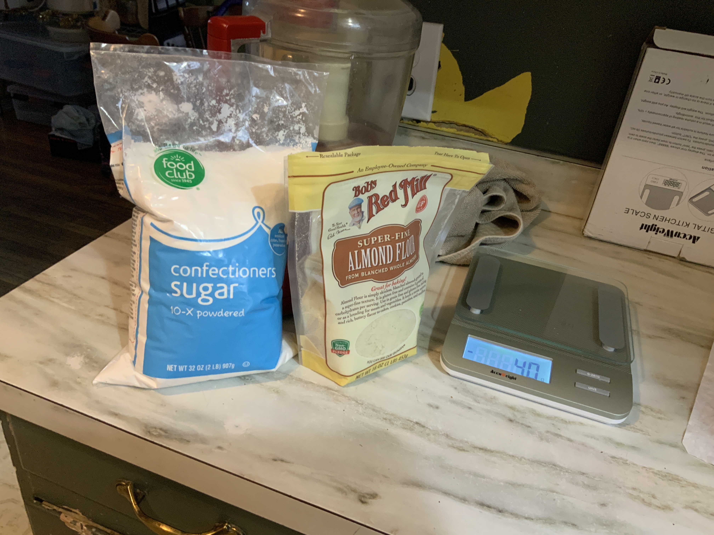
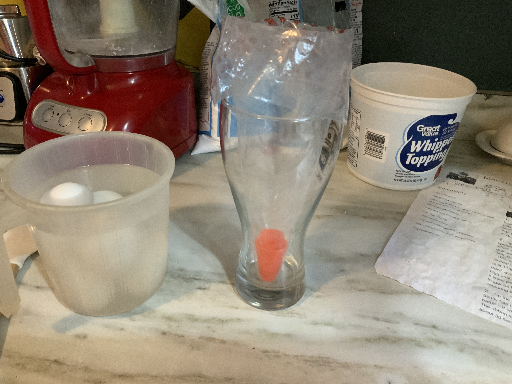
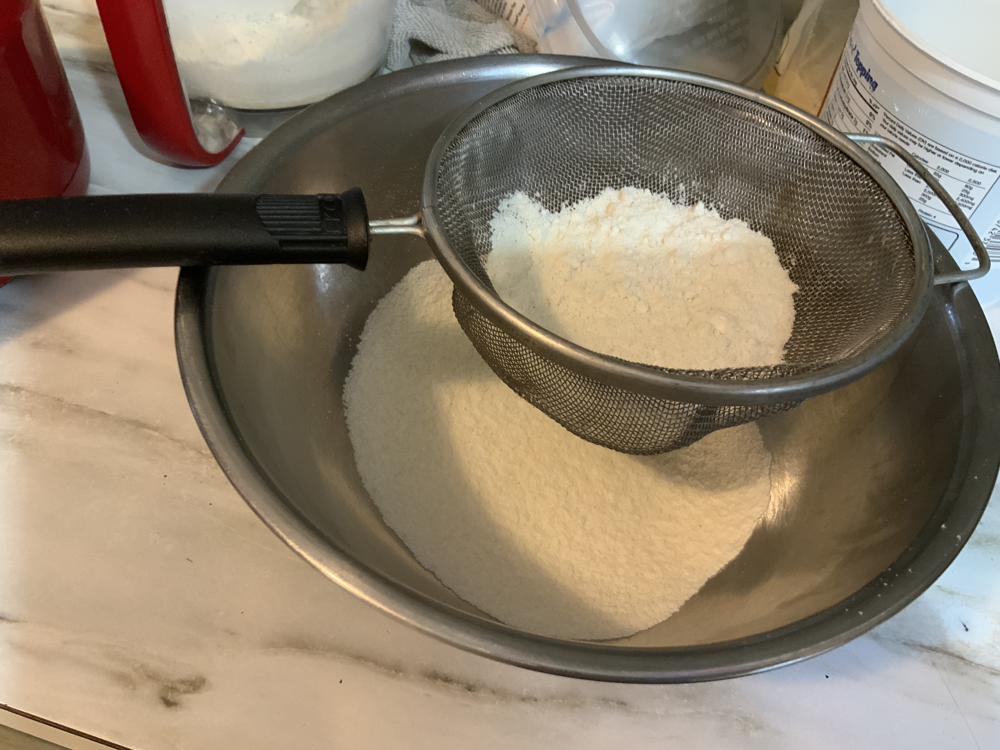
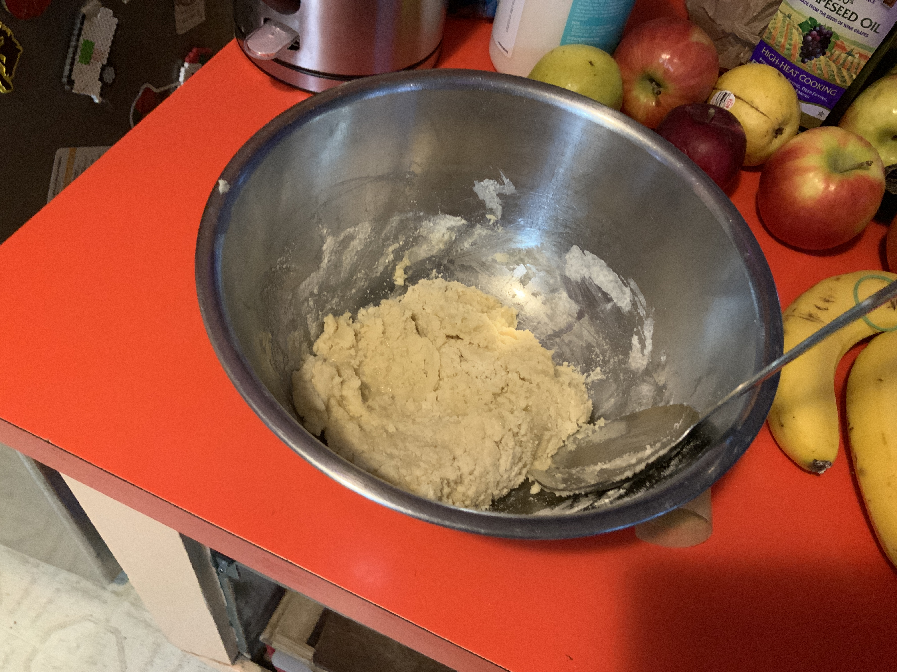
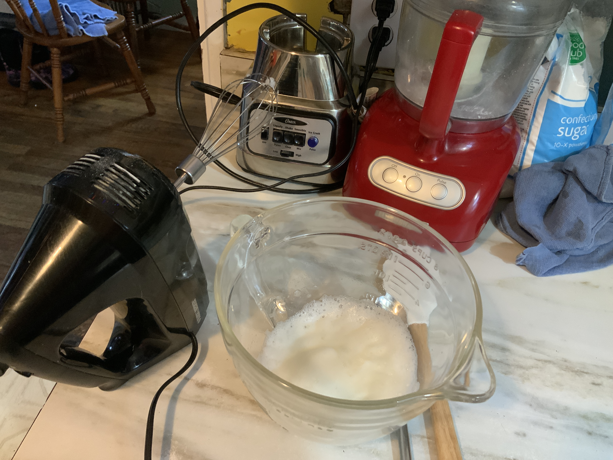
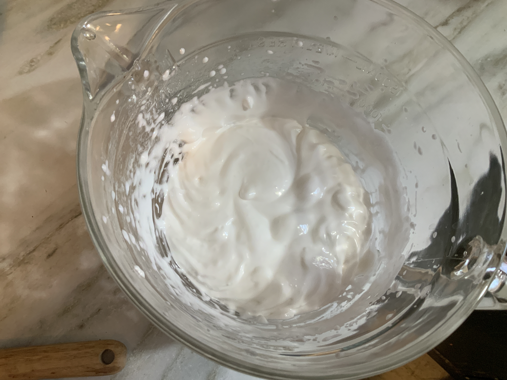
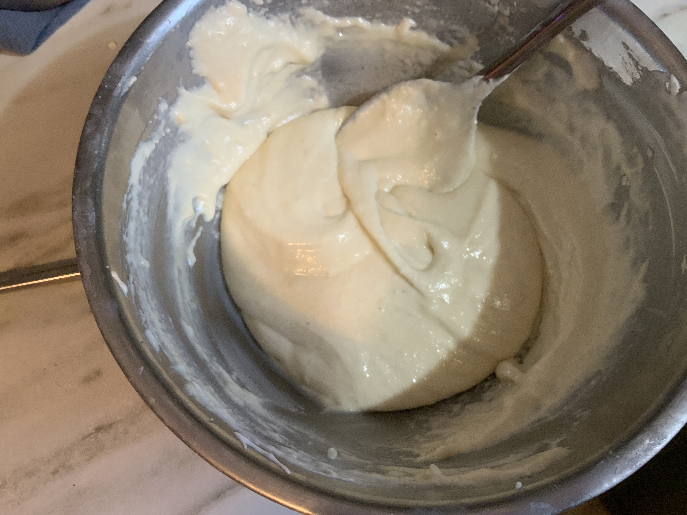
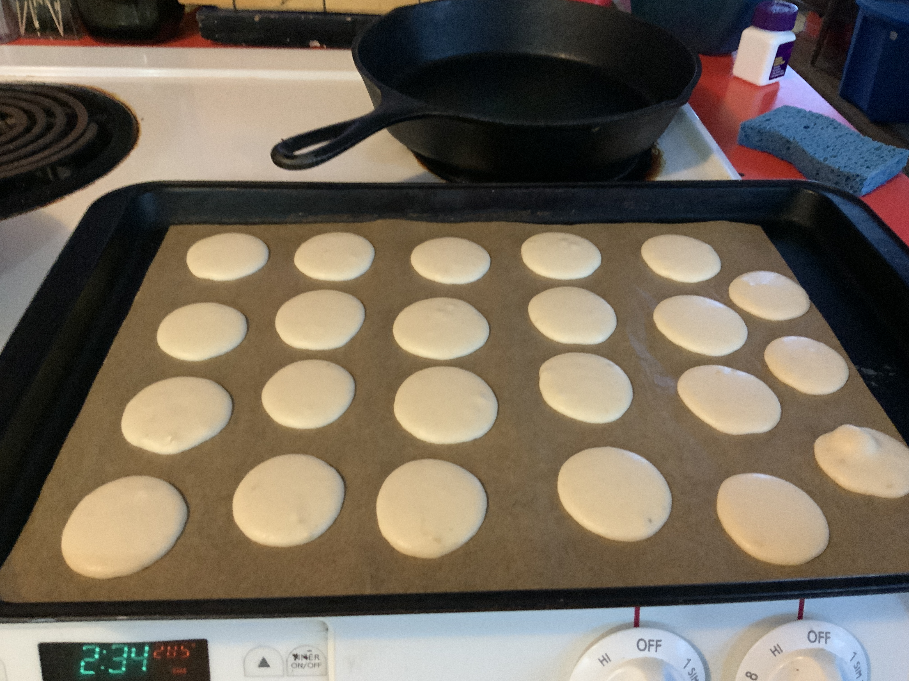
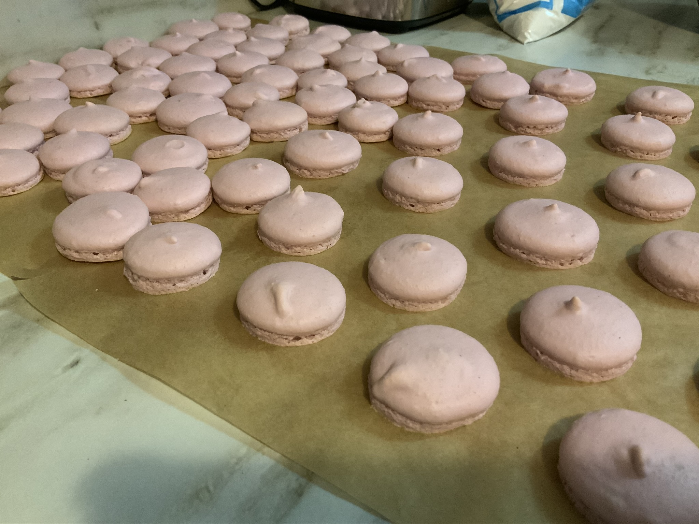
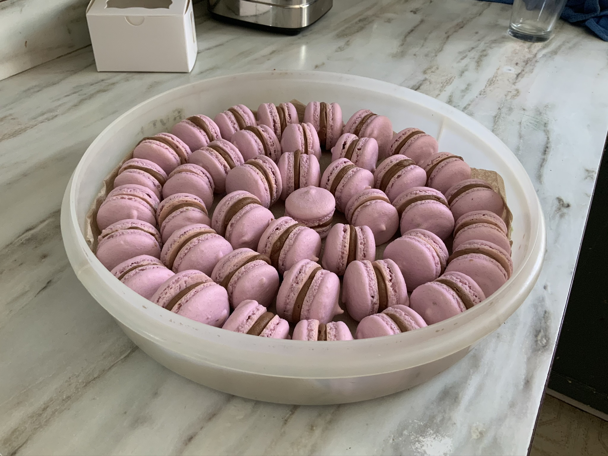

Macaron Recipe
 Image credit: http://pixelatedcrumb.com/
Image credit: http://pixelatedcrumb.com/
(Recipe from BBC Good Food , I’ve just expanded on the instructions)
170 g ground almond flour
160 g powdered sugar
160 g granulated sugar
50 mL water
Egg whites from 4 eggs (~120 mL)
Step 0: Read this recipe beginning to end and get your supplies all lined out.

*Step 1: Prep the piping bag. Put on tip, roll edge down a bit and place in tall beer mug so it’s ready to be filled.

Step 2: Prep baking sheets. Either line them with silicon baking sheet (I’ve never done this) or parchment paper.

*Step 3: Weigh out 170 g of icing (powdered) sugar, 160 g of almond flour. Pulse the 2 together in a food processor, then sift into a bowl (discard chunks that won’t sift). I’ve done steps 1-3 the night before.

Step 4: Separate egg white from 4 eggs (best if room temp). Around 120 g needed. Be careful separating egg white - any yolk will prevent the egg whites from whipping up properly.
Step 5: Add half of egg mixture to almond flour/sugar mixture. Mix so it forms a thick paste and set aside.

Step 6: Put remaining eggs white into a heat tolerant mixing bowl (glass, metal, or a heat stable plastic).
Step 7: heat 50 mL of water and 160 g of granulated sugar in saucepan on medium heat. Monitor temp with a candy thermometer. When temp reach 110°C, beat eggs in heat proof bowl with electric mixer with whisk attachment on high speed.

When sugar water mixture reaches 118°C, slow add this to the eggs (pour down side of bowl), beating them as you go. This is an Italian meringue. Keep whisking high speed until mixture is slightly (bowl is no longer hot to the touch) and the meringue is shiny and peaked. I use a hand mixer for this, but a stand mixer also works. This is a good time to add food dye (gel type is best for vibrant colors) and flavoring agent. It’s okay to have naturally colored (a nice off-white), unflavored macarons - they are delicious like that. If you want to add flavoring to the macaron batter, use those concentrated extracts because they will interfere the least with this recipe. If you want to add actual chocolate, or orange peel, or shredded ginger, save that for the buttercream, which is much more tolerant of major additions to the basic recipe.

Step 8: Tip this mixture into almond flour/sugar paste and slowly fold in the egg white. To do this, cut into the paste and scoop down and bring it to the top and drop it. Rotate bowl by a quarter turn and repeat. This takes awhile. Be patient and don’t give into the temptation to full on mix it or your egg white will flatten, the macarons will collapse after baking, and you will be sad, You are done folding when you can make a figure 8 in your mixing bowl with a ribbon of batter (and that ribbon quickly fades back into the batter).

Step 9: Load mixture into a piping bag. If you’ve never done this before, it’s tricky. The folks on Great British Bake Off make this look easy! Only fill it halfway, and try to avoid adding too much at once which might lead to the bag collapsing and dumping out your batter (also very sad). This is why I use a beer mug with the top folded down, ready to be filled. Once filled halfway, gently twist the top closed.
Step 10: pipe out small rounds, around 1 to 1.5 inches in diameter, 2 to 2.5 inches apart on parchment prepped baking trays.

Step 11: Let dry for 30 - 60 minutes until a skin has form so you can touch it and it won’t stick.
Step 12: Bake. This is tricky to get as it depends on the oven, climate and probably other things. At my house, I bake at 285°F for exactly 14 minutes. I can tell they are done when they easily peel of the parchment manually (check largest macaron in center of tray). Let cool on baking tray until tray is cool (~5 minutes) and slide off parchment w/macaron onto a countertop.

Allow to cool another few minutes, then they should peel off easily. If you try to peel them off while too warm, they may stick. And of course, don’t attempt to pipe frosting onto a warm macaron - it will melt and make a mess.
I reuse my parchment 1-3 times.
Step 13: Make buttercream frosting (there are loads of recipes out there). It needs to be thin enough to pipe and thick enough to hold a macaron together without drooping. Pipe into one macaron. Find a similar-sized macaron and pair it so you have little colorful hamburgers! Some people say these need a day to taste optimal. I have not observed this to be true. Macarons taste delicious as soon as they are cool enough to eat. They seem to keep fresh just fine the fridge for at least 5 days.

Julia Piaskowski
Statistical Consultant
I work in agricultural statists. My focal areas are data management and analytic workflow, quantitative genetics and integration of spatial statistics into routine analysis of agricultural field trials.